Dolci
15 ricette selezionate dall’archivio.
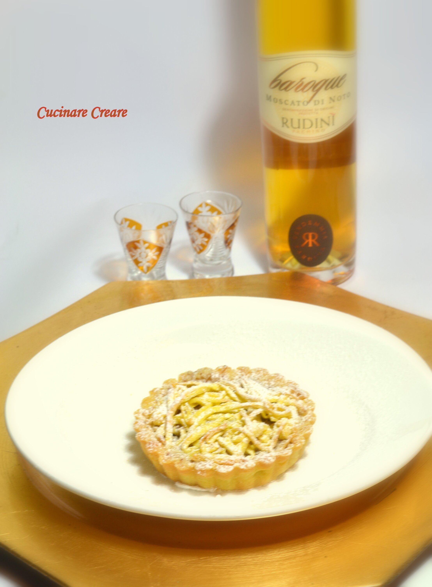
Torta mantovana di tagliatelle
Ingredienti per la base di pasta frolla: 250 grammi di farina 100 grammi di burro 90 grammi di zucchero 2 tuorli sa…
Spiedini di frutta brinati
Ingredienti: arancia fragole banane mandarini kiwi mela Preparare degli spiedini alternando la frutta fresca di sta…
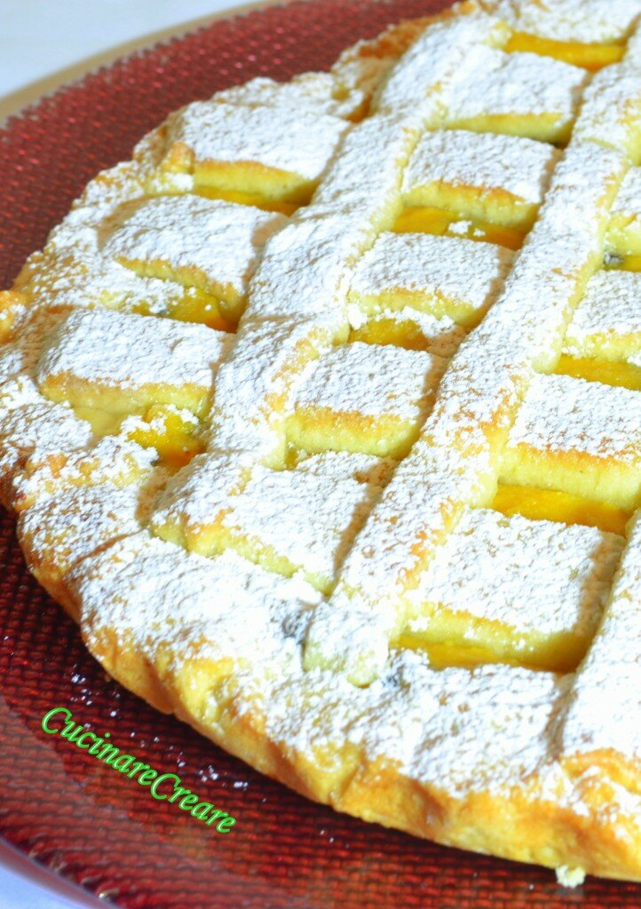
Crostata dolce con crema di zucca e ricotta
Ingredienti: 350 grammi di farina 180 grammi di burro morbido a pezzetti 150 grammi di zucchero 3 tuorli d’uovo 3 c…
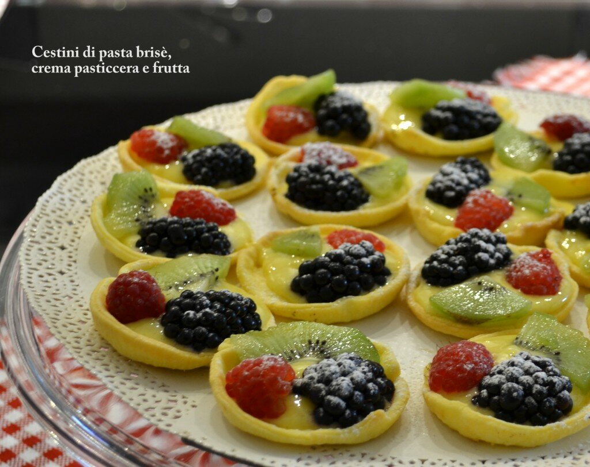
Cestini di pasta brisè con frutti di bosco
Ingredienti: 1 pasta brisè frutti di bosco zucchero a velo Preparare tanti dischetti tagliando la pasta brisè con u…
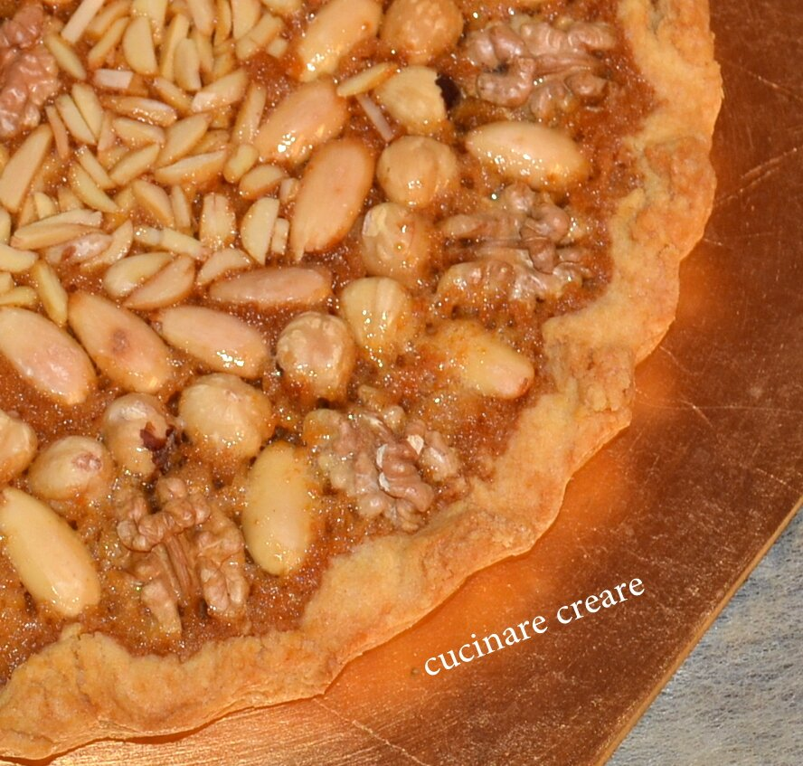
Crostata con frutta secca e miele
Ingredienti: 300 grammi di farina 150 grammi di burro 150 grammi di zucchero 1 vanillina 3 tuorli d’uovo 1 pizzico …
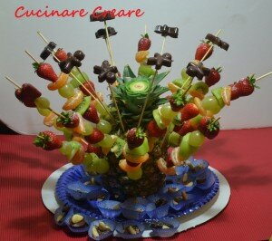
Spiedini di frutta e ananas
Ingredienti: 1 ananas fragole mandarini uva banana kiwi frutta secca 200 grammi di cioccolato fondente stuzzicadent…
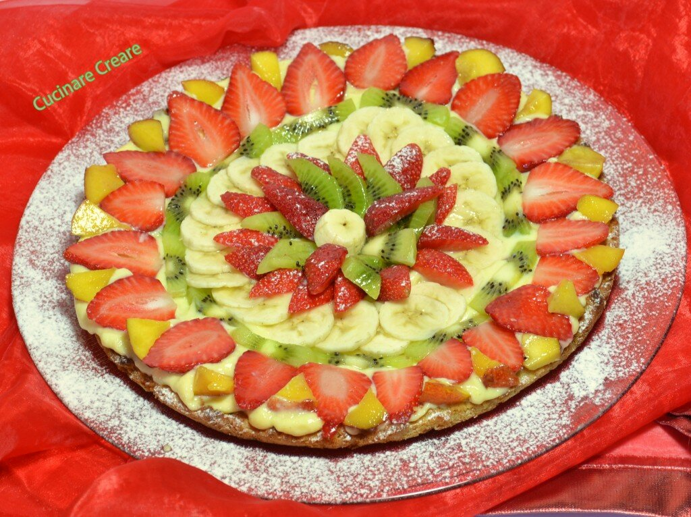
Crostata di frutta con frolla sablè
Ingredienti: 300 grami di farina 100 grammi di fecola di patate 150 grammi di zucchero a velo bacca di vaniglia 250…
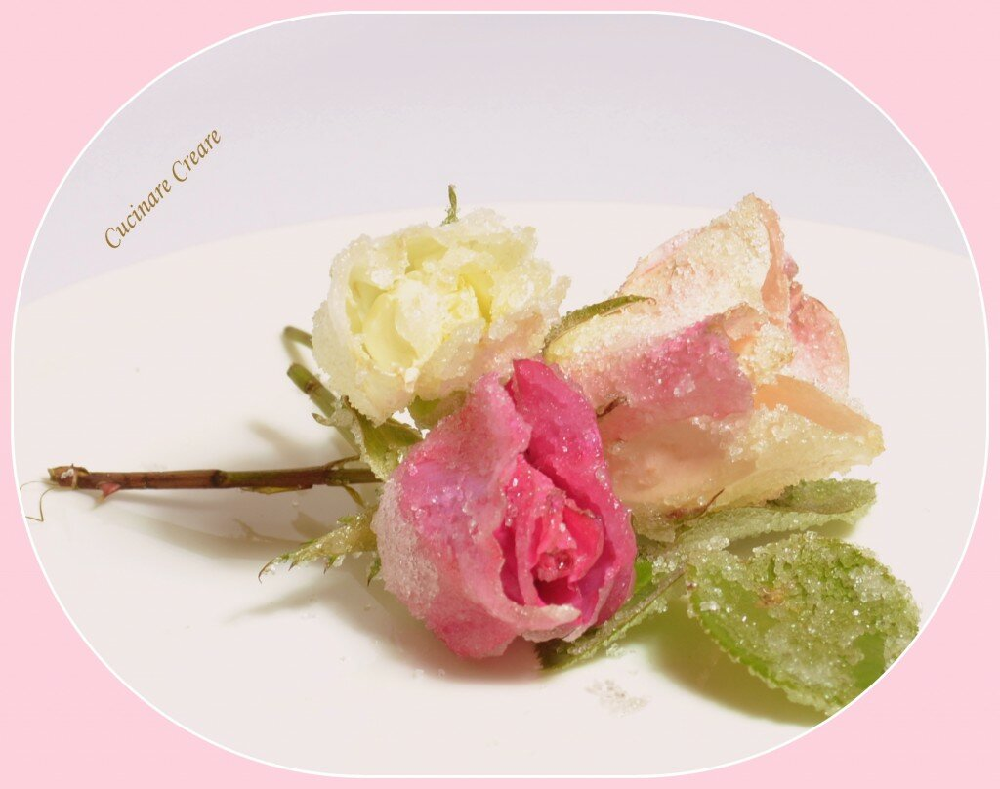
Rose brinate
Queste bellissime rose sono state preparate per la presentazione di un bouffet di dolci. Come si preparano le rose …
Torta millefoglie alle due creme
Ingredienti: 2 rotoli di pasta sfoglia zucchero a velo nocciole sbriciolate per la crema chantilly: 6 uova, 150 gr.…
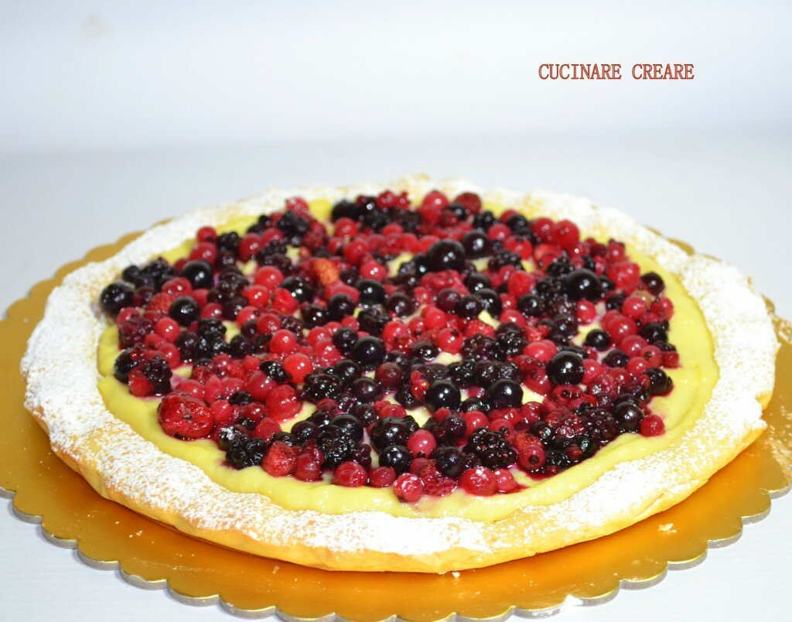
Crostata con frutta fresca
Crostata alla frutta Ingredienti per torta: 300 grammi farina 00 150 grammi burro morbido a pezzi 150 grammi zucche…
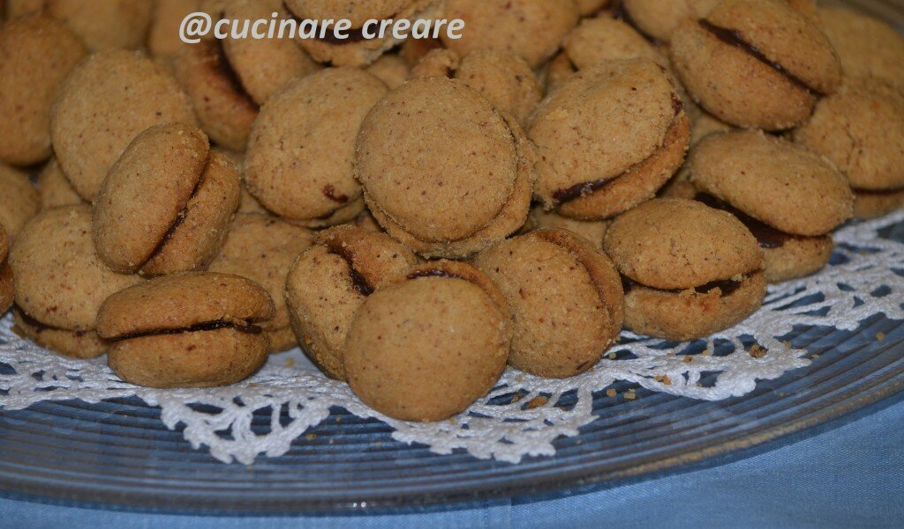
Baci di dama – Candy kisses lady
Ingredienti: 200 gr. di nocciole 200 gr. di farina 200 gr. di burro ammorbidito 150 gr. di zucchero di canna 100 gr…
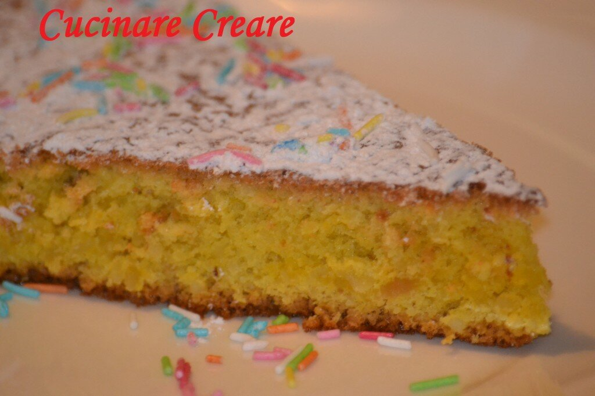
Torta di mandorle “senza glutine”
Questa è la ricetta di Luigi, sempre attento ad una corretta alimentazione, pertanto consiglia un dolce adatto a t…
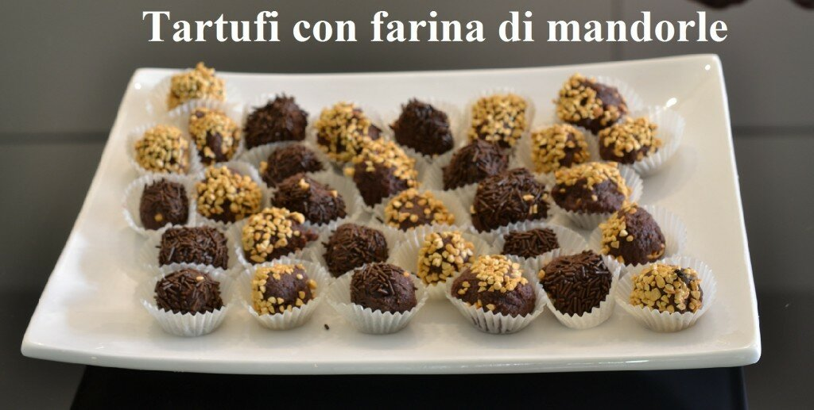
Tartufi con farina di mandorle
200 grammi di farina di mandorle 100 grammi di cioccolato fondente 100 grammi di zucchero 2 cucchiai di burrogranel…
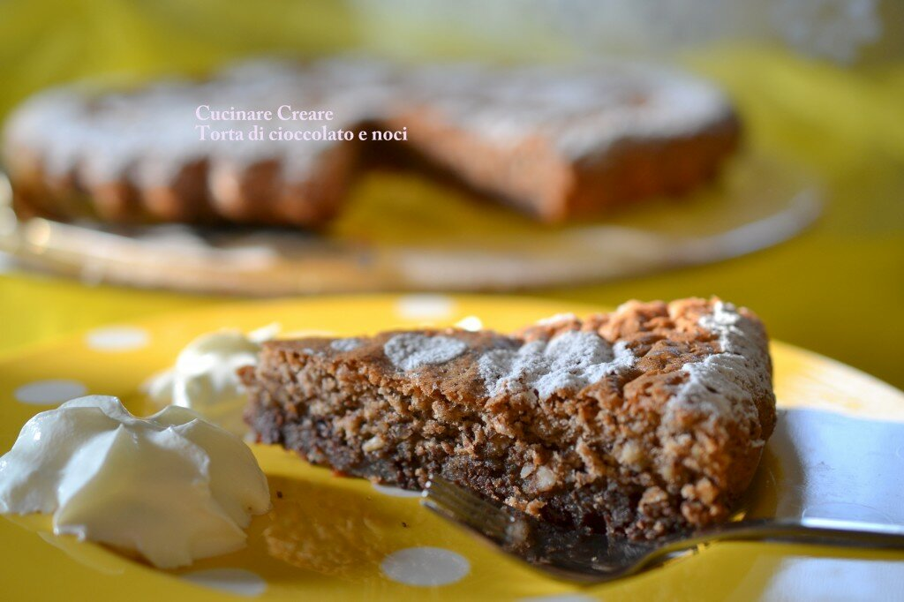
Torta di noci e cioccolato (senza glutine)
Torta senza glutine Ingredienti : 150 grammi di gherigli di noci (o nocciole) 150 grammi di cioccolato fondente 150…
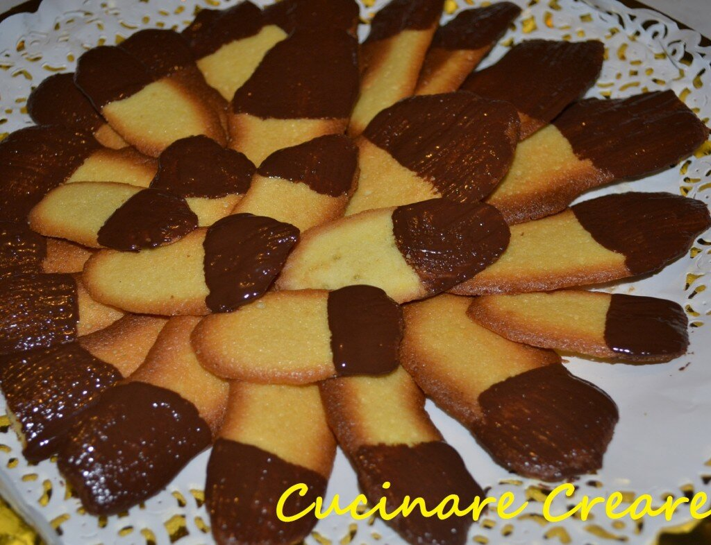
Lingue di gatto
Ingredienti. 250 grammi di farina 6 albumi 250 grammi di burro 250 grammi di zucchero a velo 1 bustina di vanillina…